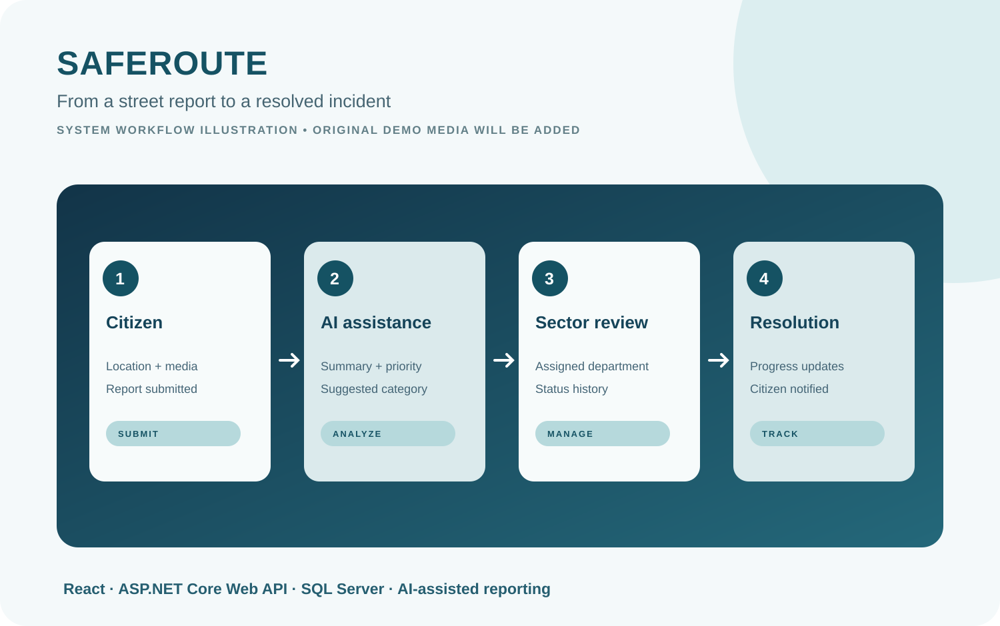

Rich reporting
Citizens submit an issue with description, location and media attachments, including supported image/audio inputs.
A smart urban incident reporting system connecting citizens with the municipal sectors responsible for resolving road hazards and infrastructure issues.

Reporting a pothole, road obstruction or infrastructure issue should not end with a lost message. SafeRoute brings citizen reports, geolocation, report attachments, review and sector assignment into a traceable process. Citizens can follow the status of their reports, while sector staff work from an organized dashboard with history and updates.
These describe the project's functional scope; this portfolio does not invent numbers of reports, users or resolution rates.
Citizens submit an issue with description, location and media attachments, including supported image/audio inputs.
A location-aware report interface connects incidents to the physical place they were observed.
AI fields assist with classifying, summarizing and prioritizing reports for further human review.
Authorized staff review incoming incidents, assign responsibility to the appropriate sector and keep an active assignment.
Reports move through review and processing toward resolution or rejection, with status-history entries and notifications.
Role-based sector views support assignments, team collaboration, internal notes and reporting statistics.
A citizen submits an issue with its location and supporting information.
The report can receive AI-supported classification or a short summary.
The responsible sector reviews and assigns the report to the right team.
Updates, status history and notifications make progress easier to track.
The solution separates an interactive React client from a .NET 8 Web API. SQL Server stores users, reports, sectors, assignments and report status history. Authentication and authorization distinguish citizen, sector and administrative access. Axios connects interface actions to API endpoints, while Swagger supports endpoint inspection and testing.
I'll add my own screenshots and screen-recorded walkthrough here. Until then, this page deliberately uses a workflow illustration instead of pretending a conceptual graphic is a real application screenshot.
There's more to my work than this one project.